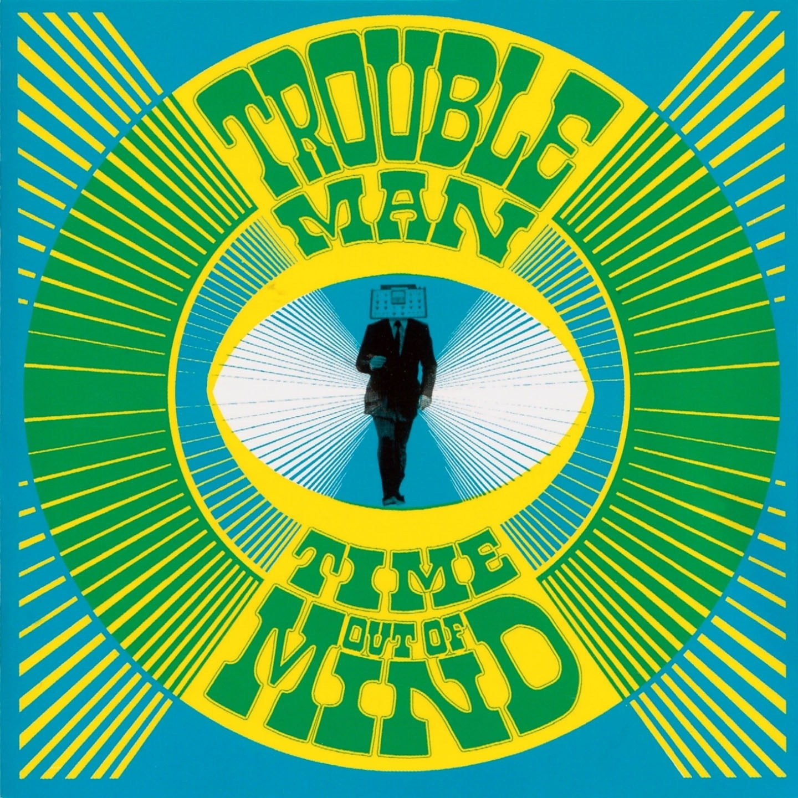

CRVI000003Thomas Fehlmann - Visions Of Blah
Designed by Bianca Strauch · Kompakt · 2002
Designed by Bianca Strauch · Kompakt · 2002

CRVI000025Gesellschaft Zur Emanzipation Des Samples - Circulations
Designed by Jens Reitemeyer · Faitiche · 2009
Designed by Jens Reitemeyer · Faitiche · 2009

CRVI000031Telefon Tel Aviv - Map of What Is Effortless
Designed by Joshua Eustis, Charles Cooper · Hefty Records · 2004
Designed by Joshua Eustis, Charles Cooper · Hefty Records · 2004

CRVI000056The Other People Place - Lifestyles Of The Laptop Café
Designed by The Designers Republic · 2001
Designed by The Designers Republic · 2001

CRVI000088Matmos - Supreme Balloon
Designer unknown · Matador · 2008
Designer unknown · Matador · 2008

CRVI000109Katsumi Asaba - Bauhaus.
Misawa Design, bauhaus collection · after Lyonel Feininger's woodcut 'Cathedral', 1919 · 2009
Misawa Design, bauhaus collection · after Lyonel Feininger's woodcut 'Cathedral', 1919 · 2009

CRVI000238Troubleman - Time Out Of Mind
Designer unknown · Far Out Recordings · 2004
Designer unknown · Far Out Recordings · 2004

CRVI000243Isoul8 - Balance
Designer unknown · Sonar Kollektiv · 2008
Designer unknown · Sonar Kollektiv · 2008

CRVI000244Matthias Vogt Trio - Changing Colours
Designer unknown · INFRACom! · 2006
Designer unknown · INFRACom! · 2006

CRVI000251Wiesław Wałkuski - Scruple
Film Poster Designed By Wiesław Wałkuski · 2000 · 2000
Film Poster Designed By Wiesław Wałkuski · 2000 · 2000

CRVI000268Robert Czerniawski - Boris Godunov
Theatre Poster · 2008 · 2008
Theatre Poster · 2008 · 2008

CRVI000270Robert Czerniawski - Gospel
Theatre Poster · 2009 · 2009
Theatre Poster · 2009 · 2009

CRVI000271Robert Czerniawski - Lulu on the Bridge
Theatre Poster · 2008 · 2008
Theatre Poster · 2008 · 2008